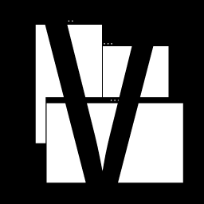

Vasyan
Wireframe and prototype builder
Vasyan is a simple, crossplatform tool for designing app screens. Create wireframes and prototypes with screens, elements, icons, and annotations. Export to PNG and iterate quickly—desktop, tablet, and mobile presets included.
Sign up for beta